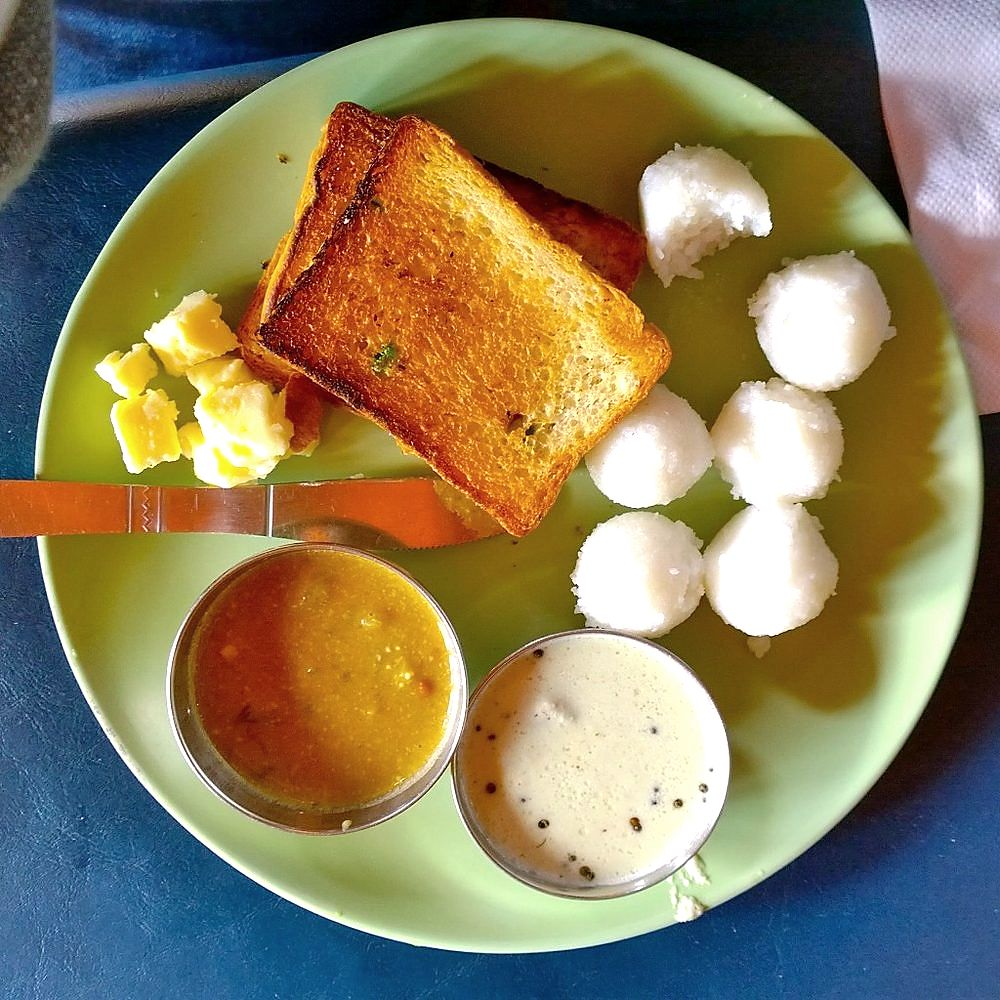

Prep25 min
Cook30 min
Total55 min
Serves4
Difficultymoderate
Allergens: none of the common ones
Ingredients
Quantities for 4.
- 2 cups Rice Flourcoarse rice rava is traditional; fine rice flour gives a smoother, slightly softer dumpling
- 3.5 cups Water
- 1/3 cup fresh grated Coconutfor fragrance and a little biteoptional
- 2 tsp Coconut Oil
- 1 tsp Salt
Cookware
stovetop, steamer
Before you start
- Boil the water in a wide, heavy pan. A thin pan scorches the flour the moment it hits the base.
- Shape the dumplings while the dough is still hot enough to be uncomfortable to hold. Cooled dough cracks and will not seal.
- Keep a bowl of cold water beside you for dipping your palms between dumplings.
- Have the steamer already at a rolling boil before the first dumpling is rolled.
Method
- Bring the water to a full boil with the salt and coconut oil in a wide heavy pan.
- Lower the heat to minimum and add the rice flour all at once, stirring hard with a wooden spoon.Add it in one go, not in stages. Sprinkling flour in slowly is how you get lumps.
- Keep stirring 2 to 3 minutes until the mixture pulls away from the sides in a single rough mass with no dry flour left.
- Cover the pan and leave it on the lowest heat for 5 minutes so the flour steams through.
- Tip the dough onto a plate, scatter over the grated coconut and let it cool just enough to handle, about 3 minutes.
- Knead the hot dough with wet hands for 3 minutes until it is completely smooth and slightly shiny.This kneading is the whole recipe. Under-kneaded dough gives dumplings that crack open in the steamer.
- Break off lime-sized pieces and roll each between wet palms into a smooth ball with no seams or cracks.
- Arrange the balls in a greased steamer plate, leaving a finger's gap between them.
- Steam over rapidly boiling water for 12 minutes, until the surfaces look matt and set rather than wet.
- Turn off the heat and leave them in the covered steamer 5 minutes before lifting them out.Straight out of the steam they are sticky; the short rest firms them up.
Storage
Best within a few hours. Keeps 2 days refrigerated in a covered box; re-steam 5 minutes to soften. They go hard and chalky in the fridge if left uncovered.
Nutrition Good estimate
| Per serving89 g | Per 100 g | |
|---|---|---|
| Calories | 333 kcal | 373 kcal |
| Protein | 4.9 g | 6 g |
| Carbohydrate | 64.3 g | 72 g |
| of which sugars | 0.5 g | 1 g |
| Fibre | 2.5 g | 3 g |
| Fat | 5.6 g | 6 g |
| of which saturated | 4.1 g | 5 g |
| of which unsaturated | 1.0 g | 1 g |
Worked out from the listed quantities; most of the ingredient list could be weighed. Estimated from raw ingredients using USDA FoodData Central. Cooking changes are not modelled, and added salt is excluded, so sodium is not given.
Recipe v1.0.0, last updated 2026-07-31. Curated for Khaana and kept under version control.